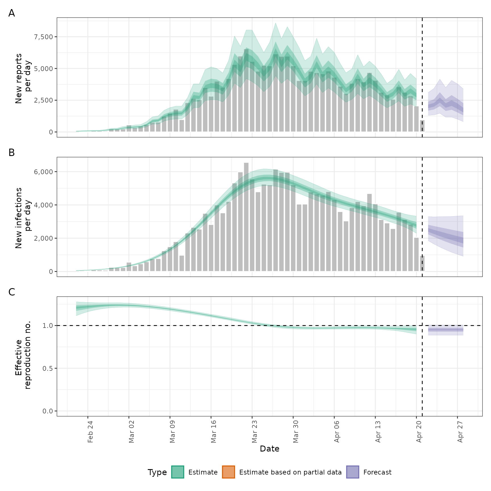

![[Stable]](figures/lifecycle-stable.svg) Estimates a truncation distribution from multiple snapshots of the same
data source over time. This distribution can then be used passed to the
Estimates a truncation distribution from multiple snapshots of the same
data source over time. This distribution can then be used passed to the
truncation argument in regional_epinow(), epinow(), and
estimate_infections() to adjust for truncated data and propagate the
uncertainty associated with data truncation into the estimates.
See here
for an example of using this approach on Covid-19 data in England. The
functionality offered by this function is now available in a more principled
manner in the epinowcast R package.
The model of truncation is as follows:
The truncation distribution is assumed to be discretised log normal wit a mean and standard deviation that is informed by the data.
The data set with the latest observations is adjusted for truncation using the truncation distribution.
Earlier data sets are recreated by applying the truncation distribution to the adjusted latest observations in the time period of the earlier data set. These data sets are then compared to the earlier observations assuming a negative binomial observation model with an additive noise term to deal with zero observations.
This model is then fit using stan with standard normal, or half normal,
prior for the mean, standard deviation, 1 over the square root of the
overdispersion and additive noise term.
This approach assumes that:
Current truncation is related to past truncation.
Truncation is a multiplicative scaling of underlying reported cases.
Truncation is log normally distributed.
Usage
estimate_truncation(
data,
max_truncation,
trunc_max = 10,
trunc_dist = "lognormal",
truncation = trunc_opts(LogNormal(meanlog = Normal(0, 1), sdlog = Normal(1, 1), max =
10)),
model = NULL,
stan = stan_opts(),
CrIs = c(0.2, 0.5, 0.9),
filter_leading_zeros = FALSE,
zero_threshold = Inf,
weigh_delay_priors = FALSE,
verbose = TRUE,
...,
obs
)Arguments
- data
A list of
<data.frame>s each containing a date variable and a confirm (numeric) variable. Each data set should be a snapshot of the reported data over time. All data sets must contain a complete vector of dates.- max_truncation
Deprecated; use
truncationinstead.- trunc_max
Deprecated; use
truncationinstead.- trunc_dist
Deprecated; use
truncationinstead.- truncation
A call to
trunc_opts()defining the truncation of the observed data. Defaults totrunc_opts(), i.e. no truncation. See theestimate_truncation()help file for an approach to estimating this from data where thedistlist element returned byestimate_truncation()is used as thetruncationargument here, thereby propagating the uncertainty in the estimate.- model
A compiled stan model to override the default model. May be useful for package developers or those developing extensions.
- stan
A list of stan options as generated by
stan_opts(). Defaults tostan_opts(). Can be used to overridedata,init, andverbosesettings if desired.- CrIs
Numeric vector of credible intervals to calculate.
- filter_leading_zeros
Logical, defaults to TRUE. Should zeros at the start of the time series be filtered out.
- zero_threshold
![[Experimental]](figures/lifecycle-experimental.svg) Numeric defaults
to Inf. Indicates if detected zero cases are meaningful by using a threshold
number of cases based on the 7-day average. If the average is above this
threshold then the zero is replaced using
Numeric defaults
to Inf. Indicates if detected zero cases are meaningful by using a threshold
number of cases based on the 7-day average. If the average is above this
threshold then the zero is replaced using fill.- weigh_delay_priors
Deprecated; use the
weight_prioroption intrunc_opts()instead.- verbose
Logical, should model fitting progress be returned.
- ...
Additional parameters to pass to
rstan::sampling().- obs
Deprecated; use
datainstead.
Value
A list containing: the summary parameters of the truncation
distribution (dist), which could be passed to the truncation argument
of epinow(), regional_epinow(), and estimate_infections(), the
estimated CMF of the truncation distribution (cmf, can be used to
adjusted new data), a <data.frame> containing the observed truncated
data, latest observed data and the adjusted for
truncation observations (obs), a <data.frame> containing the last
observed data (last_obs, useful for plotting and validation), the data
used for fitting (data) and the fit object (fit).
Examples
# \donttest{
# set number of cores to use
old_opts <- options()
options(mc.cores = ifelse(interactive(), 4, 1))
# fit model to example data
# See [example_truncated] for more details
est <- estimate_truncation(example_truncated,
verbose = interactive(),
chains = 2, iter = 2000
)
#> WARN [2024-05-17 06:46:14] estimate_truncation (chain: 1): There were 16 divergent transitions after warmup. See
#> https://mc-stan.org/misc/warnings.html#divergent-transitions-after-warmup
#> to find out why this is a problem and how to eliminate them. -
#> WARN [2024-05-17 06:46:14] estimate_truncation (chain: 1): Examine the pairs() plot to diagnose sampling problems
#> -
# summary of the distribution
est$dist
#> - lognormal distribution (max: 10):
#> meanlog:
#> - normal distribution:
#> mean:
#> -1.5
#> sd:
#> 0.42
#> sdlog:
#> - normal distribution:
#> mean:
#> 2.2
#> sd:
#> 0.74
# summary of the estimated truncation cmf (can be applied to new data)
print(est$cmf)
#> index mean se_mean sd lower_90 lower_50 lower_20
#> <int> <num> <num> <num> <num> <num> <num>
#> 1: 1 1.0000000 2.841612e-18 1.287894e-16 1.0000000 1.0000000 1.0000000
#> 2: 2 0.9959817 8.234627e-05 2.391053e-03 0.9918361 0.9942799 0.9954235
#> 3: 3 0.9911848 1.756028e-04 5.100451e-03 0.9824452 0.9875702 0.9899241
#> 4: 4 0.9853390 2.824026e-04 8.206851e-03 0.9714823 0.9794849 0.9832429
#> 5: 5 0.9780249 4.063135e-04 1.181892e-02 0.9582524 0.9697122 0.9748666
#> 6: 6 0.9685517 5.522312e-04 1.609107e-02 0.9422204 0.9571965 0.9641082
#> 7: 7 0.9556828 7.267940e-04 2.124877e-02 0.9218700 0.9405969 0.9493621
#> 8: 8 0.9369240 9.379186e-04 2.762329e-02 0.8941702 0.9176644 0.9279591
#> 9: 9 0.9062008 1.189229e-03 3.563865e-02 0.8533781 0.8815258 0.8945473
#> 10: 10 0.8422177 1.399491e-03 4.503376e-02 0.7774165 0.8106767 0.8275186
#> 11: 11 0.3988415 7.681224e-04 2.572449e-02 0.3625257 0.3810868 0.3908308
#> median upper_20 upper_50 upper_90
#> <num> <num> <num> <num>
#> 1: 1.0000000 1.0000000 1.0000000 1.0000000
#> 2: 0.9960444 0.9967710 0.9978069 0.9998087
#> 3: 0.9912810 0.9928150 0.9950800 0.9995225
#> 4: 0.9853456 0.9878334 0.9914761 0.9990796
#> 5: 0.9777542 0.9813781 0.9866176 0.9982391
#> 6: 0.9679933 0.9727595 0.9800641 0.9968254
#> 7: 0.9546200 0.9604822 0.9705197 0.9939494
#> 8: 0.9351613 0.9420934 0.9553823 0.9881763
#> 9: 0.9023640 0.9118379 0.9286184 0.9737323
#> 10: 0.8381265 0.8489546 0.8671247 0.9264689
#> 11: 0.3966214 0.4025914 0.4123501 0.4457076
# observations linked to truncation adjusted estimates
print(est$obs)
#> date confirm last_confirm report_date mean se_mean sd lower_90
#> <Date> <num> <num> <Date> <int> <int> <int> <int>
#> 1: 2020-03-24 4764 4789 2020-04-01 5237 0 26 5193
#> 2: 2020-03-25 5191 5249 2020-04-01 5178 1 43 5106
#> 3: 2020-03-26 5102 5210 2020-04-01 6057 2 73 5934
#> 4: 2020-03-27 5924 6153 2020-04-01 5749 3 95 5584
#> 5: 2020-03-28 5567 5959 2020-04-01 5536 4 123 5321
#> 6: 2020-03-29 5289 5974 2020-04-01 4468 4 131 4233
#> 7: 2020-03-30 4183 5217 2020-04-01 2948 3 114 2739
#> 8: 2020-03-31 2668 4050 2020-04-01 2001 3 104 1814
#> 9: 2020-04-01 1681 4053 2020-04-01 0 NA 0 0
#> 10: 2020-03-29 5970 5974 2020-04-06 6023 1 31 5972
#> 11: 2020-03-30 5209 5217 2020-04-06 5286 1 44 5213
#> 12: 2020-03-31 4035 4050 2020-04-06 4126 1 49 4042
#> 13: 2020-04-01 4020 4053 2020-04-06 4151 2 69 4032
#> 14: 2020-04-02 4697 4782 2020-04-06 4917 3 109 4725
#> 15: 2020-04-03 4483 4668 2020-04-06 4788 4 140 4536
#> 16: 2020-04-04 4182 4585 2020-04-06 4621 5 179 4294
#> 17: 2020-04-05 3864 4805 2020-04-06 4600 7 239 4170
#> 18: 2020-04-06 2420 4316 2020-04-06 6091 10 379 5429
#> 19: 2020-04-03 4653 4668 2020-04-11 4694 0 24 4655
#> 20: 2020-04-04 4554 4585 2020-04-11 4622 1 38 4558
#> 21: 2020-04-05 4741 4805 2020-04-11 4848 2 58 4749
#> 22: 2020-04-06 4208 4316 2020-04-11 4345 2 72 4221
#> 23: 2020-04-07 3431 3599 2020-04-11 3591 2 79 3451
#> 24: 2020-04-08 2779 3039 2020-04-11 2968 2 87 2812
#> 25: 2020-04-09 3234 3836 2020-04-11 3574 4 138 3321
#> 26: 2020-04-10 2993 4204 2020-04-11 3563 5 185 3230
#> 27: 2020-04-11 1848 3951 2020-04-11 4651 8 289 4146
#> 28: 2020-04-08 3036 3039 2020-04-16 3063 0 15 3037
#> 29: 2020-04-09 3829 3836 2020-04-16 3886 1 32 3832
#> 30: 2020-04-10 4187 4204 2020-04-16 4281 1 51 4194
#> 31: 2020-04-11 3916 3951 2020-04-16 4044 2 67 3928
#> 32: 2020-04-12 4605 4686 2020-04-16 4820 3 107 4633
#> 33: 2020-04-13 3925 4074 2020-04-16 4192 4 123 3971
#> 34: 2020-04-14 2873 3124 2020-04-16 3175 4 123 2950
#> 35: 2020-04-15 2393 2919 2020-04-16 2849 4 148 2582
#> 36: 2020-04-16 1512 2580 2020-04-16 3806 6 236 3392
#> 37: 2020-04-13 4074 4074 2020-04-21 4110 0 21 4075
#> 38: 2020-04-14 3124 3124 2020-04-21 3170 0 26 3126
#> 39: 2020-04-15 2919 2919 2020-04-21 2985 1 36 2924
#> 40: 2020-04-16 2580 2580 2020-04-21 2664 1 44 2588
#> 41: 2020-04-17 3563 3563 2020-04-21 3730 2 82 3584
#> 42: 2020-04-18 3126 3126 2020-04-21 3339 3 98 3163
#> 43: 2020-04-19 2843 2843 2020-04-21 3142 4 122 2919
#> 44: 2020-04-20 2051 2051 2020-04-21 2442 3 127 2213
#> 45: 2020-04-21 962 962 2020-04-21 2421 4 150 2158
#> date confirm last_confirm report_date mean se_mean sd lower_90
#> lower_50 lower_20 median upper_20 upper_50 upper_90
#> <int> <int> <int> <int> <int> <int>
#> 1: 5216 5228 5236 5243 5256 5283
#> 2: 5145 5164 5177 5188 5208 5251
#> 3: 6004 6036 6058 6076 6109 6182
#> 4: 5680 5722 5751 5774 5815 5908
#> 5: 5449 5506 5540 5571 5623 5737
#> 6: 4378 4440 4473 4507 4558 4678
#> 7: 2873 2925 2956 2982 3026 3126
#> 8: 1938 1980 2005 2031 2073 2162
#> 9: 0 0 0 0 0 0
#> 10: 5999 6013 6022 6030 6045 6076
#> 11: 5253 5273 5286 5297 5318 5361
#> 12: 4089 4111 4126 4139 4161 4210
#> 13: 4101 4132 4152 4169 4199 4266
#> 14: 4839 4890 4920 4947 4993 5095
#> 15: 4692 4758 4793 4831 4885 5013
#> 16: 4503 4586 4634 4674 4744 4900
#> 17: 4456 4551 4610 4669 4766 4970
#> 18: 5868 6011 6101 6191 6350 6675
#> 19: 4676 4686 4693 4700 4711 4736
#> 20: 4593 4610 4621 4631 4649 4687
#> 21: 4805 4830 4848 4863 4889 4947
#> 22: 4293 4325 4347 4364 4396 4466
#> 23: 3535 3572 3594 3614 3647 3721
#> 24: 2908 2949 2971 2994 3028 3107
#> 25: 3482 3546 3583 3615 3668 3789
#> 26: 3451 3525 3571 3616 3691 3849
#> 27: 4481 4590 4659 4728 4849 5097
#> 28: 3051 3057 3062 3066 3074 3090
#> 29: 3861 3876 3885 3894 3909 3941
#> 30: 4243 4266 4282 4294 4317 4369
#> 31: 3995 4025 4045 4061 4091 4156
#> 32: 4744 4794 4823 4850 4895 4995
#> 33: 4108 4166 4197 4229 4277 4389
#> 34: 3093 3150 3183 3211 3259 3366
#> 35: 2759 2818 2855 2891 2951 3078
#> 36: 3666 3755 3812 3868 3967 4170
#> 37: 4094 4103 4109 4115 4125 4146
#> 38: 3150 3162 3170 3177 3189 3215
#> 39: 2958 2974 2985 2994 3010 3046
#> 40: 2632 2652 2665 2676 2695 2738
#> 41: 3671 3709 3732 3753 3788 3864
#> 42: 3271 3318 3342 3368 3406 3495
#> 43: 3061 3117 3150 3178 3225 3331
#> 44: 2365 2415 2447 2478 2529 2638
#> 45: 2332 2389 2425 2461 2524 2653
#> lower_50 lower_20 median upper_20 upper_50 upper_90
# validation plot of observations vs estimates
plot(est)
 # Pass the truncation distribution to `epinow()`.
# Note, we're using the last snapshot as the observed data as it contains
# all the previous snapshots. Also, we're using the default options for
# illustrative purposes only.
out <- epinow(
example_truncated[[5]],
truncation = trunc_opts(est$dist)
)
#> Logging threshold set at INFO for the EpiNow2 logger
#> Writing EpiNow2 logs to the console and: /tmp/RtmpcrDp8K/regional-epinow/2020-04-21.log
#> Logging threshold set at INFO for the EpiNow2.epinow logger
#> Writing EpiNow2.epinow logs to the console and: /tmp/RtmpcrDp8K/epinow/2020-04-21.log
#> WARN [2024-05-17 06:46:15] epinow: No generation time distribution given. Assuming a fixed generation time of 1 day, i.e. the reproduction number is the same as the daily growth rate. If this was intended then this warning can be silenced by setting `dist` explicitly to `Fixed(1)`. - generation_time_opts
#> WARN [2024-05-17 06:50:41] epinow: There were 36 divergent transitions after warmup. See
#> https://mc-stan.org/misc/warnings.html#divergent-transitions-after-warmup
#> to find out why this is a problem and how to eliminate them. -
#> WARN [2024-05-17 06:50:41] epinow: Examine the pairs() plot to diagnose sampling problems
#> -
#> WARN [2024-05-17 06:50:42] epinow: Bulk Effective Samples Size (ESS) is too low, indicating posterior means and medians may be unreliable.
#> Running the chains for more iterations may help. See
#> https://mc-stan.org/misc/warnings.html#bulk-ess -
plot(out)
# Pass the truncation distribution to `epinow()`.
# Note, we're using the last snapshot as the observed data as it contains
# all the previous snapshots. Also, we're using the default options for
# illustrative purposes only.
out <- epinow(
example_truncated[[5]],
truncation = trunc_opts(est$dist)
)
#> Logging threshold set at INFO for the EpiNow2 logger
#> Writing EpiNow2 logs to the console and: /tmp/RtmpcrDp8K/regional-epinow/2020-04-21.log
#> Logging threshold set at INFO for the EpiNow2.epinow logger
#> Writing EpiNow2.epinow logs to the console and: /tmp/RtmpcrDp8K/epinow/2020-04-21.log
#> WARN [2024-05-17 06:46:15] epinow: No generation time distribution given. Assuming a fixed generation time of 1 day, i.e. the reproduction number is the same as the daily growth rate. If this was intended then this warning can be silenced by setting `dist` explicitly to `Fixed(1)`. - generation_time_opts
#> WARN [2024-05-17 06:50:41] epinow: There were 36 divergent transitions after warmup. See
#> https://mc-stan.org/misc/warnings.html#divergent-transitions-after-warmup
#> to find out why this is a problem and how to eliminate them. -
#> WARN [2024-05-17 06:50:41] epinow: Examine the pairs() plot to diagnose sampling problems
#> -
#> WARN [2024-05-17 06:50:42] epinow: Bulk Effective Samples Size (ESS) is too low, indicating posterior means and medians may be unreliable.
#> Running the chains for more iterations may help. See
#> https://mc-stan.org/misc/warnings.html#bulk-ess -
plot(out)

options(old_opts)
# }